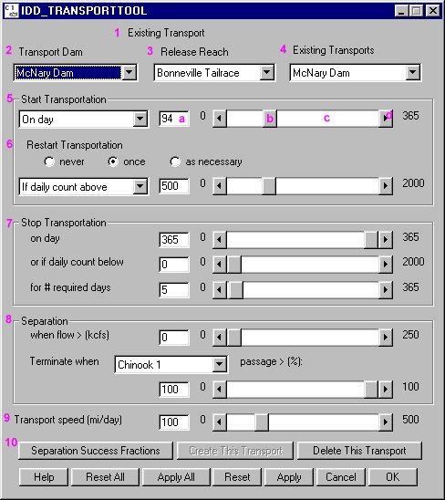

Set Transport Parameters
Parameters for each transport are set in the Transport Tool window. Each element of the Transport Tool window is described below. There are several ways to edit each slider in this window.
- Type a new value into the text box to the left of the slider (a).
- Move the pointer to the slider (b) and drag the slider to adjust the value.
- Click on either side of the slider box (c) to adjust the value by increments of 10.
OR
- Click on the end-arrows (d) of the slider to adjust the value by an increment of one.

Transport Tool window
Transport Tool features and functions
- Transport Record Type (1): Defines the state of the transport.
- No title indicates a transport record is not active in COMPASS.
- Existing Transport: Indicates an active transport record.
- Transport Dam (2): Select dam from which transported fish are collected.
- Release Reach (3): Select river reach into which fish are released.
- Existing Transport (4): List of existing transport sites
- Start Transportation (5): Conditions to start transportation. Select from the menu to begin transport:
- On day: Julian day to start transportation, or
- If daily count above: Number of fish that pass the dam in a day. (Unless realistic numbers of fish are modeled in the system, transport by count will not itself be realistically simulated.)
- Restart Transportation (6): Conditions to restart transportation. Choices are:
- never: Indicates transportation is never restarted.
- once: Restarts transportation once on a specific Julian day (On day) or if passage exceeds a given count on a day (If daily count above).
- as necessary: Restarts transportation every time passage is above the specified count (If daily count above).
- Stop Transportation (7): Conditions to stop transportation. Choices are:
- on day: Julian day to stop transportation, or
- if daily count below: Number of fish that pass the dam in a day for the specified number of sequential days (for # required days).
- Separation (8): Separation refers to those fish which will be separated and returned to the tailrace instead of being transported. Separators in bypass systems of dams will separate and return smaller fish to the tailrace when flow is above a specified level. Separation is terminated and all fish are collected when passage of a specified stock, the indicator species, exceeds a specified percentage. All species are separated with likelihood defined by separation probability (see Separation Success Fractions). Separator efficiency of each species is set for each dam. Criteria for starting and stopping separation:
- when flow > (kcfs): Identifies flows above which separation starts.
- Terminate when: Identifies indicator species (Chinook 0, Chinook 1, Steelhead) for which its passage will terminate separation.
- passage > (%): Identifies what percent of the indicator species must pass to terminate separation. If this value is set to 0, then separation will never start and all bypassed fish will be transported. If this value is set to 100, then separation will always occur and fish will be returned to the river as specified in Separation Success Fractions window.
Note. At McNary Dam separation typically begins with flows of 220 kcfs and at Little Goose and Lower Monumental Dams with flows of 100 kcfs. Separation is stopped if 80 percent of spring chinook (Chinook 1) have passed and all bypassed fish are then transported thereafter.
- Transport speed (mi/day) (9): Identifies barge or truck transportation speed in miles per day from collection site to release site.
- Separation Success Fractions (10): Opens the Separation Success Fractions window which defines percent of each species returned to the river at each dam.
- Help: Opens context-sensitive help information.
- Reset All, Apply All, Reset, Apply, Cancel, OK